Bom, vamos lá. Eu nasci no ano 2000, em uma pequena cidade da Bahia, moro em São Paulo desde 2007.
Eu quero
e vou ser um desenvolvedor full stack. Contudo,
estou focando primeiro no front end, depois irei para o back end.
Eu sempre gostei de tecnologia. No
entanto, grande parte da minha carreira profissional foi trabalhando na indústria de manufatura, com
aquele leve interesse por trabalhar com T.I sempre por perto. Em 2022 eu pesquisei muito sobre o mercado
de trabalho, as competências essenciais para ser um ótimo profissional e, principalmente, por onde
começar.
Após conversar com os amigos que já trabalham na área, tomei uma das decisões mais difíceis que
já fiz. Eu tranquei a faculdade e saí do serviço - digo que foi um risco calculado - para focar nos
estudos e procurar oportunidades em uma área de atuação diferente de onde estive em boa parte do
tempo.
Estudo
Eu não era o aluno de maior nota da turma, mas sempre me esforcei. 😅 😅 😅
Então em 2015 (onde tudo começou a mudar), eu passei no processo seletivo do SENAI, iniciei o curso de
Mecânica de Usinagem - aprendizagem industrial - e dois meses depois, eu já estava trabalhando
(aprendiz) em uma empresa muuuuito grande.
SENAI Jandira
Em 2017, terminei o curso do SENAI e também finalizei o ensino médio. Fiz o ENEM mas não tirei uma nota
muito boa para conseguir uma bolsa. Não fiquei desanimado por conta disso. Muito pelo contrário, segui
estudando para me sair melhor na próxima oportunidade. Nesse sentido, em 2018 fiz o ENEM novamente,
tirei uma nota muito melhor e consegui uma bolsa integral para cursar Comércio Exterior, na Universidade
Nove de Julho (Uninove).
O curso teve a duração de 2 anos, me formei em dez/2020. Naquele momento, pensei que queria continuar
trabalhando na indústria de manufatura. Logo, iniciei o curso de Gestão da Produção Industrial, na FATEC
Cotia. Onde fiquei até jul/2022.
Registros do SENAI
Abaixo estão algumas fotos do caminhão que foi construído durante o curso, além de
registros da
formatura.
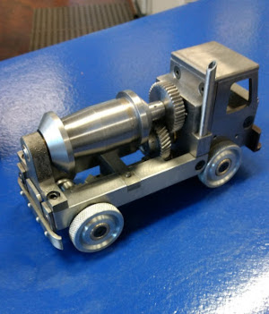
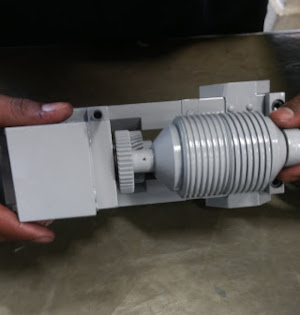
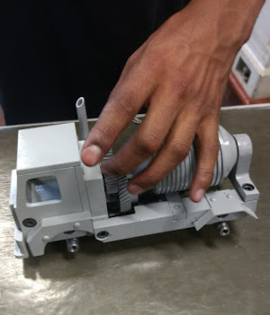
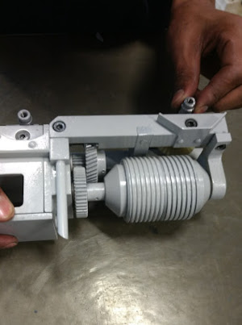
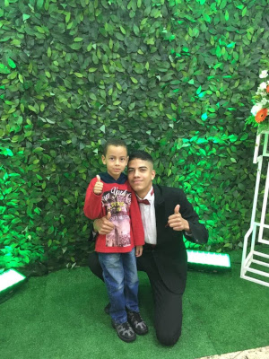
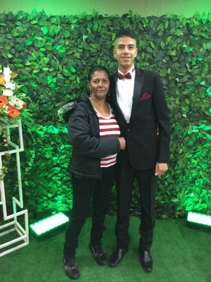
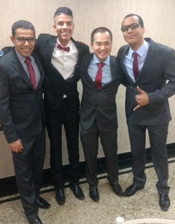
O que estou estudando
Uma das principais metas que estabeleci para 2023 foi iniciar um curso superior voltado para
o
mercado de T.I. Então quando consegui um novo em
emprego em dezembro de 2022, já me inscrevi no vestibular da FIAP para cursar Análise e
Desenvolvimento de Sistemas, deu tudo certo e estou gostando muito do curso. Até o momento, já
abordamos temas como:
Levantamento de requisitos
Scrum
Prototipação de interface com o Figma
Modelagem de dados com SQL Data Modeler
Criação de Front End com Bootstrap
Também estou estudando as tecnologias abaixo:
Símbolo
Nome
Característica
HTML5
Estruturar o conteúdo do site
CSS
Estilizar o conteúdo do site
JavaScript
Tornar o site interativo
Github
Controlar versões remotamente
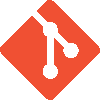
Git
Controlar versões localmente
React
Facilitar a construção de interface na web; foi desenvolvido pelo Facebook
Carreira
Agora vou falar um pouco sobre as experiências profissionais que tive.
Aprendiz SENAI
Este foi o meu primeiro emprego, acredito que tenha
sido o principal também. Foi nesta empresa que o meu perfil profissional foi sendo
moldado. Lá eu conheci muita gente admirável, fiz ótimas amizades e aprendi muito. Não
consigo pensar em um lugar melhor para ter iniciado a carreira, de verdade! Sou muito
grato a todos que conheci lá, agradeço pelos ensinamentos e por todos os conselhos que
recebi!
2015 - 2017
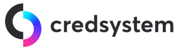
Aprendiz
Depois que saí da GE - em junho de 2017 - eu queria
voltar a trabalhar o mais breve possível. Porém, eu ainda estava com 16 anos, portanto,
seria um pouco difícil conseguir um emprego efetivo naquele momento. E é aqui que entra
a Danielli, eramos da mesma sala na escola. Ela me falou sobre o CAMP
Barueri. Após 3 meses de curso, eu fui indicado para uma entrevista na Cred e
passei. Neste emprego tive a oportunidade de conhecer ótimos profissionais, em especial
a pessoa que foi minha gestora.
2017 - 2019
Estagiário de Comércio Exterior
Em fevereiro de 2019 eu iniciei o curso de Comércio
Exterior. No mês de julho do mesmo ano, através do NUBE, consegui uma oportunidade
para participar de um processo seletivo na Chiesi e, felizmente, fui aprovado. Foi mais
uma grande mudança na minha vida. Foi a primeira vez que trabalhei em conjunto com
pessoas de outro país. Aqui eu desenvolvi uma habilidade muito importante, que é falar
em público.
2019 - 2020
Estagiário de Manufatura
Depois que finalizei o curso de Comércio Exterior,
iniciei os estudos em Gestão da Produção Industrial e fui estagiar na Baker (antes era
GE). Essa experiência foi sensacional, pois reencontrei e trabalhei com amigos dos
tempos de GE. Ademais, conheci novos profissionais, participei de projetos, aprendi
muito e me desenvolvi ainda mais.
2021 - 2022
Analista de Importação
Em dezembro de 2022 consegui uma oportunidade de atuar
como analista de importação na CF, que é uma importadora de material médico hospitalar.
Tal como bisturi, catéter, sonda endotraqueal, máscara, seringa, agulha e muitas outras
coisas que vemos em hospitais.
2022 - Atual
Dicas de Estudo
Eu acredito que sempre devemos começar pela base e, nesse contexto,
é muito importante iniciar os estudos em lógica de programação e depois ir avançando em outros
conteúdos. O curso de lógica nos ensina como pensar e planejar o algoritmo que será desenvolvido.
Além disso, depois que entendemos a maneira de pensar, aplicaremos isso em todas as outras
linguagens.
Afinal, o que muda de uma linguagem para a outra é a sintaxe, a
maneira como escrevemos. No entanto, a maneira de pensar será sempre muito semelhante.
Momento das dicas
Vou começar citando a plataforma Curso em Vídeo, pois os
cursos são de qualidade e ainda são grátis, você só paga se for emitir o certificado, porém isso não
te impede de concluir o curso e aprender. Mas vá com calma, não tente estudar tudo ao mesmo
tempo. Nessa plataforma há cursos de:
Lembrando que tem muito conteúdo de qualidade e de graça no
Youtube. Também recomendo que consulte o site da
W3School
e
Mozilla Developers.
Dica bônus
Leitor, através do Instagram, eu conheci uma faculdade
nova. O nome dela é 42
SP. Ela oferece o curso de
Engenharia de Software TOTALMENTE grátis, desde que você passe pelo processo seletivo deles.
Vale a pena dar uma pesquisada!
Filmes e series relacionadas à tecnologia
Essas recomendações são para te aproximar mais de algumas
figuras importantes e que marcaram época.
O Jogo da Imitação
Durante a Segunda Guerra Mundial, o governo britânico
monta uma equipe que tem por objetivo quebrar o Enigma, o famoso código que os
alemães usam para enviar mensagens aos submarinos. Um de seus integrantes é Alan
Turing, que ficou conhecido como o pai da computação.
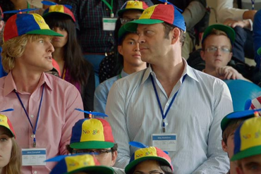
Os Estagiários
Quando a empresa de Billy e Nick é fechada, eles se
inscrevem em uma seleção de testes do Google. Mesmo não tendo garantia de
contratação, eles viajam para a sede da empresa e devem lidar com a diferença de
idade entre eles e os outros concorrentes.
Jobs
Steve Jobs é um sujeito de personalidade forte e
dedicado, que não se incomoda de passar por cima dos outros para atingir suas
metas. O que faz com que tenha dificuldades em manter relações amorosas e de
amizade.
A Rede Social
Mark Zuckerberg se torna o mais jovem bilionário da
história com o sucesso da rede social Facebook. Sucesso, no entanto, o leva a
complicações em sua vida social e profissional.
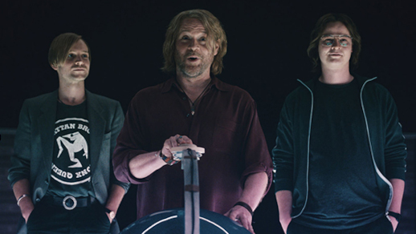
Batalha Bilionária: O Caso Google Earth
Minissérie alemã original da Netflix, acompanha a famosa
disputa entre o Google e TerraVision.
Matrix
Thomas Anderson representa um jovem programador de
computador que mora em um cubículo escuro. Encontra-se conectado por cabos e
contra sua vontade, em um imenso sistema de computadores do futuro. Morpheus
está convencido de que Thomas Anderson é Neo, capaz de enfrentar o Matrix.